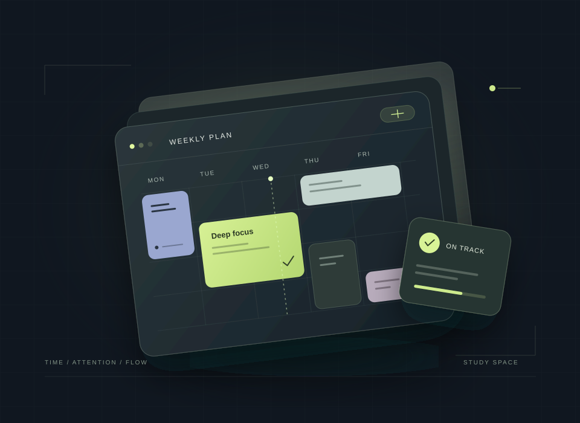
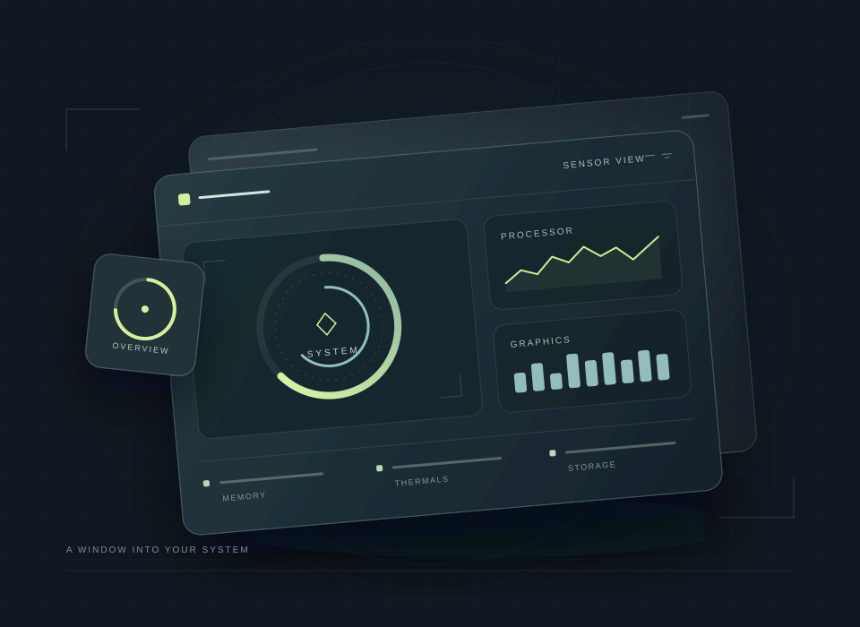
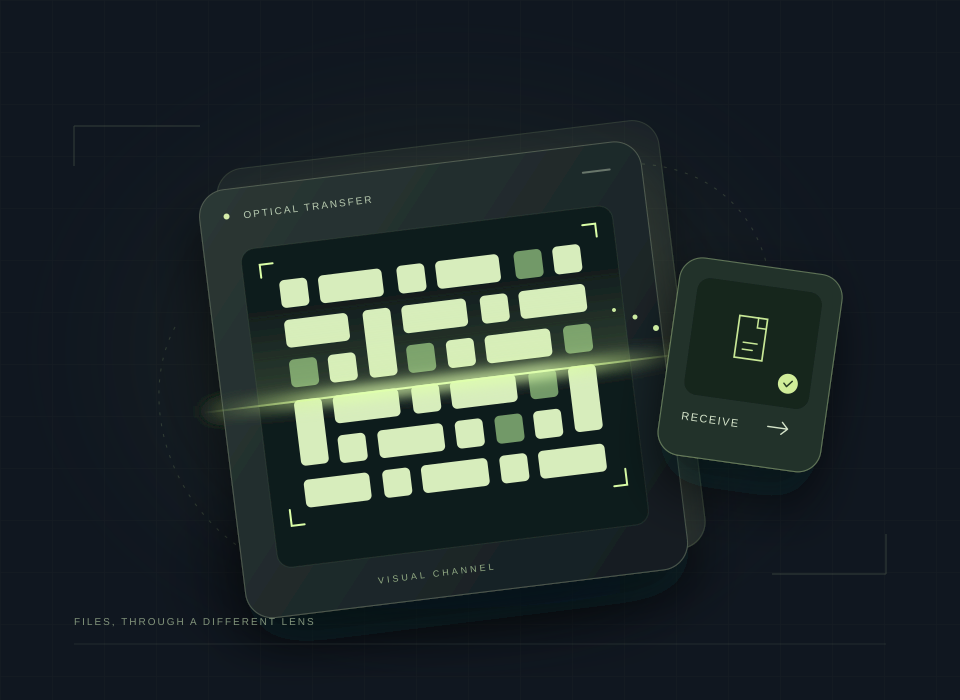
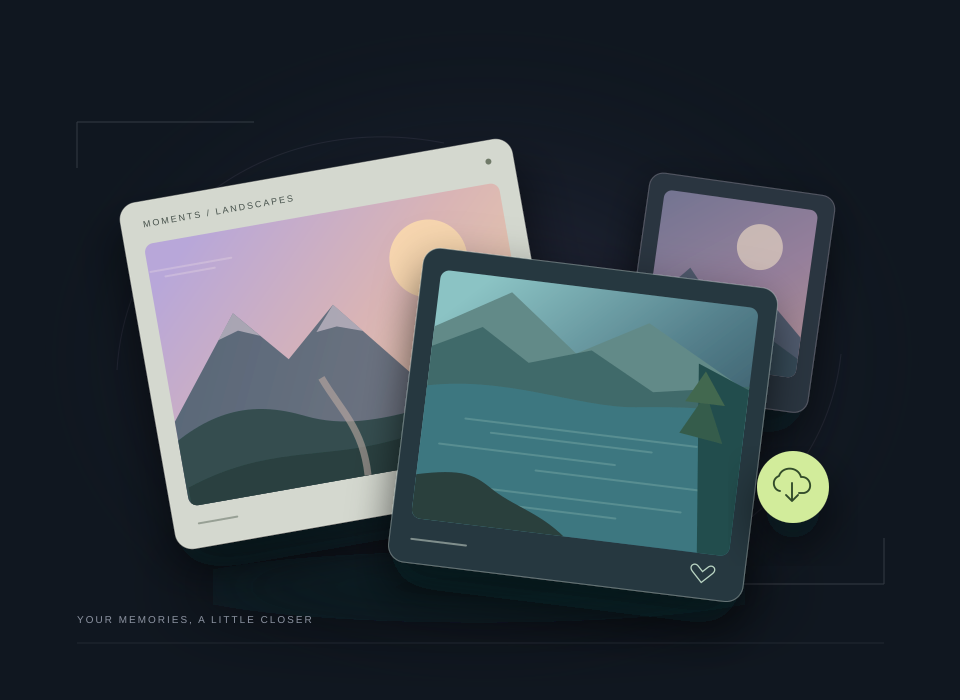
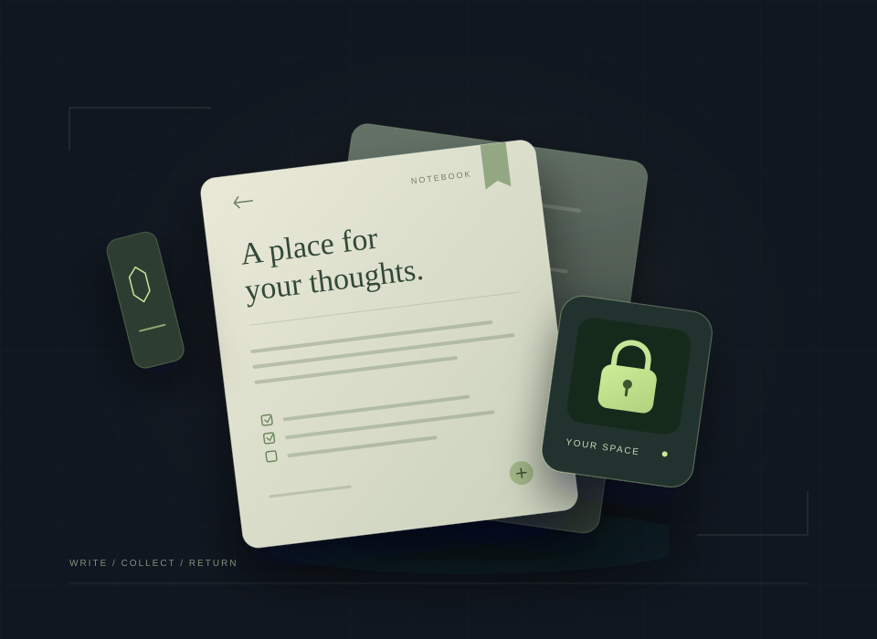
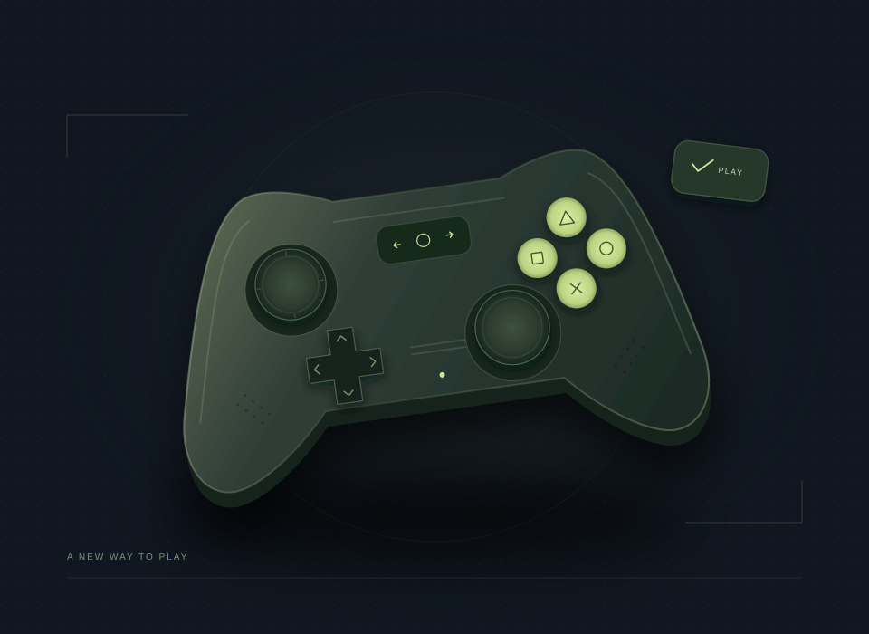
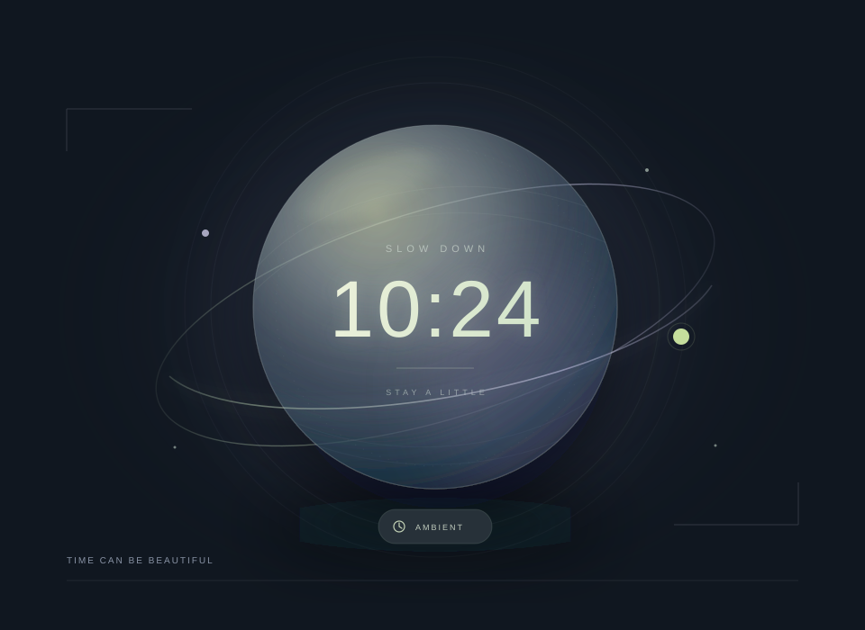

從問題出發
課表、照片、筆記或桌面。每個項目，都從一個值得解決的日常問題開始。
INDEPENDENT SOFTWARE. OPEN POSSIBILITIES.
從學習與創作，到桌面與生活。
把好點子，化為真正用得上的工具。

DESIGN STUDY / 概念視覺
THE COLLECTION / 精選項目
找到適合你的工具。
點進項目，看看它能帶來什麼。
07 個項目
課表、作業與考試，一起安排。
管理固定課表、作業、考試與學習計劃。同步版可連接 Nextcloud 網頁端，獨立離線版則不需帳號或伺服器。

02 / 07CONCEPT VISUAL讓第二個螢幕，成為你的控制中心。
把時鐘、行事曆、便箋、快捷方式與系統資訊放在副螢幕。依照自己的使用習慣排列組件，在日常桌面與遊戲模式之間切換。

03 / 07CONCEPT VISUAL讓資料透過光，抵達另一台裝置。
將檔案或文字轉為連續變化的 QR Code，再用另一台裝置的相機接收。整個傳輸過程不需要網路、帳號或雲端服務。

04 / 07CONCEPT VISUAL自己的照片，放在自己的雲端。
為 Nextcloud 相片打造的 Android 圖庫。用日期分組瀏覽照片與影片，管理雲端相簿、備份手機照片，也能保存離線副本。

05 / 07CONCEPT VISUAL離線記下想法，回到雲端同步。
連接自己的 Nextcloud Notes，在手機上建立、整理與編輯筆記。提供 Markdown 編輯與預覽，並能為個別筆記加上密碼保護。

06 / 07CONCEPT VISUAL把手機，變成你的遊戲手把。
用 Android 手機觸控控制 Windows 遊戲。透過區域網路或藍牙連接電腦伴侶程式，將輸入轉換成 Xbox 360 / XInput 手把訊號。

07 / 07CONCEPT VISUAL時間、光，還有一點留白。
一個專注於視覺氛圍的 Windows 桌面時鐘。柔和光霧持續流動，搭配時間、日期與輪換短句，適合放在閒置螢幕上。
LESS FRICTION. MORE POSSIBILITY.
讓介面更直覺，讓流程更順手。
專注於日常裡真實而具體的需求。
課表、照片、筆記或桌面。每個項目，都從一個值得解決的日常問題開始。
原始碼與使用說明都在 GitHub，讓你了解工具如何運作，也讓建議有機會成為下一次改進。
從本機工具到自架雲端，依照你的裝置與需求，選擇適合的使用方式。
KEEP EXPLORING